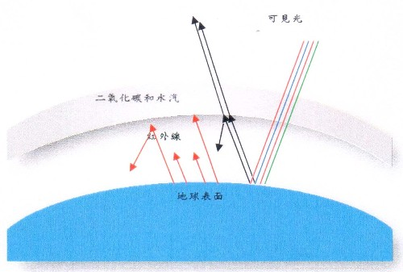
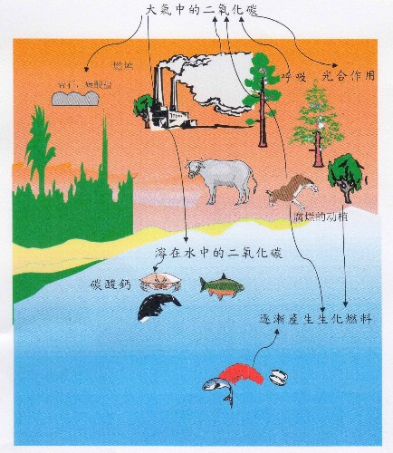
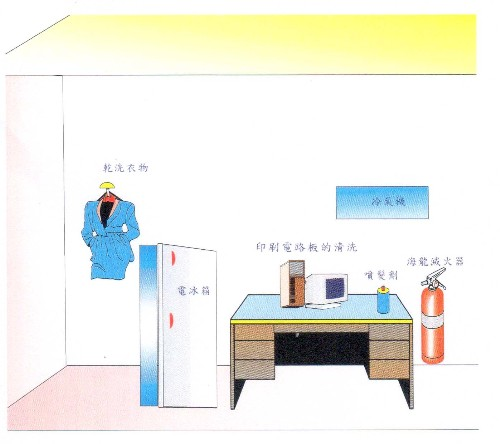

环境保护两大问题 :地球的温室效应与臭氧层的破坏
一、 大气层
地球表面上空大约为厚度1000公里的气体所覆盖，大气层不仅提供地球上所有生物包括人类和动物呼吸及植物生长所必需的氧气，同时也使地球免于过热、过冷及受紫外线及陨石的侵袭，而在无线电通讯方面也扮演了重要的角色。
1.大气层的分类
大气是气体的混合物，受地球重力的吸引，环绕在地球表面，越接近地面的空气越浓，越高的地方空气越薄。为了便于探讨，常依其温度特性，将大气分成五层如图1，即对流层、平流层、中气层、增温层（或称游离层）、外气层等5个分层。
图1：大气依其高度与温度关系可分为五层
2．五个大气层
（1）离地面最近的两个大气层：对流层和平流层
如图2，离地面11公里以下称为对流层（Troposphere），大部份的空气都 包含在这一层，此层较下方有水蒸气形成的云，离地表6公里以上的空气即很稀薄，以致于爬山到此高度时须要带氧气呼吸。
对流层之上为平流层（Stratosphere），在地表上方11-50公里处，中央部份为臭氧 层（Ozone layer），它可阻挡太阳的紫外线，人类若遭受过多紫外线绕照射会严重烧伤皮肤，故臭氧层对人类生活很重要。事实上，地球表面的空气中臭氧的含量非常少，即使在海边也一样，幸好也是如此，因为臭氧是很毒的气体。顾名思义平流层气流比对流层安静。现代的喷射机爬高性能较好，为了避免在对流层中受到垂直气流的困扰，常常飞到平流层底部，但喷射机也只能在平流层内的较低部份飞行，因为较高部份没有足够的氧可供燃料燃烧，火箭在超过平流层的高度飞行时，必须自备液态氧。
图2：离地球最近的二个气层，对流层与平流层
（2）中气层
从平流层顶端一直延伸到离地面约80公里处称为中气层，此层较平流层干 燥， 无云、无雨，主要成分为N2、0， 02等。
（3）增温层
从地面80公里至550公里之间是所谓的增温层，为什么叫作增温层呢?因为 过了中气 层，空气的密度已经极为稀薄到声音无法传播的程度，同时温度从中气层顶-90。C急剧升高，到了550公里已达1500℃它，因此称为增温层，此层温度会升高的主要原因是宇宙线及太阳辐射光中的极短波等含有极高能量会与此处的空气碰撞，产生电离、光化作用，空气被离子化或被碰撞后所生成的离子及原子带有很高的能量，因此温度迅速增加。又因离子特别多，此层又称为游离层，游离层对波长较短的辐射可以完全穿透，而极长波(比红外线波长还长)则几乎完全无法通过而被反射回去。普通无线电波的波长都很长，所以可以在地表与游离层闲来回反射，因而能超越地形和地表曲面的限制，传达到很远的地方。如图3。
图3 游离层对无线电波的反射，近似垂直的射线能穿过游离层，
但是以一临界角发出的电波(视频率而定)却被折回。地面也
是一个导体 ，一部份电波能射回天空。
(4)外气层
从离地面55OKm~l0OOKm处，为大气层中最高的区域；主要包括原子及离子 的氧、氢及氨，这里的粒子像要脱离地球的地心引力，却被地心引力所束缚。在外气层之外，乃是末被地心引力所束缚的地区，称为星际太空。
二、 地球的温室效应
1.何谓温室效应
培养植物的玻璃房屋之所以能保持相当高的温度，是因日光短波(红、澄、黄、绿、蓝、龙、紫及微量紫外线)辐射可以穿过温室的玻璃，被植物及土壤所吸收，吸收可见光的植物及土坏再以波长比红光更长的红外线辐射。但这种红外线无法穿透玻璃而逸出之故，因之转换为热能使玻璃房屋能保持相当高的温度，(如图4)。
图4：温室效应 光线穿透温室的玻璃，被植物及土壤所吸收，
然后再以更长波长的红外光辐射。玻璃不允许这些光线逃脱
，所以热量便停留在温室内。
2．地球的温室效应
太阳所发射出来的光，大约有45%属可见光，46%在红外光范围，另有9%为紫外光部分。当这些辐射通过大气层时，属于极短波的紫外线有99%被臭气层所吸收，另外红外光部份被二氧化碳及水所吸收，故只有可见光能透过大气而到达地面。当这些可见光的能量被地面吸收后，再从地面产生更长的红外光向外发散。这些波长较可见光长的红外线辐射到大气层时有些又被二氧化碳和水蒸气吸收，剩下不被吸收的红外线则逃离地球，因为热可被保留在大气中，温暖地球的表面，这种现象称为地球温室效应。当大气的二氧化碳和水的浓度增加所吸收的红外线也增加，大气的温度也增加，如图5。照道理，高山比山脚更靠近太阳，但爬山的人都有这样的经验，爬的月愈高愈觉得寒冷。这是因为太阳的光线照到地球表面后，被地面吸收地面，放出波长更长的红外线，温暖大地，因此离地面愈远，温度就愈往下降。

图5：地球温室效应
3. 二氧化碳的平衡
每天，地球上的每个人、每只动物、每棵植物、每座焚化炉都在吸收氧气，吐出二氧化碳。就拿人来说，每天差不多要呼出五公升多的二氧化碳。
如此下去，氧气岂不会被用光，世界岂不会成了二氧化碳的世界？人类岂不遭到覆灭了吗? 十九世纪时的英国物理学家汤姆逊．克尔文就十分忧虑地说:「随着工业的发达与人口的增多，五百年以后，地球上所有的氧气将被用光，人类将趋于灭亡!」
这真是杞人忧天；因为这些人只是看到问题的一面，即氧气的消耗和二氧化碳的产生，却没有看到问题的另一面，即氧气的生成和二氧化碳的消耗。
瑞士的科学家谢尼伯曾经做过这样的一个实验:他采集了许多植物的绿叶，浸在水里，放到阳光底下。很快的，叶子不断地吐出一个个小气泡，谢尼伯用一只试管收集了这些气体。这些气体是什么呢?当谢尼伯把一片点着了的木条扔进试管时，木条猛烈地燃烧，射出耀眼的光芒，这就是氧气，因为只有氧气才能够帮助燃烧。
接着，谢尼伯又往水里通进二氧化碳。他发现，通进去的二氧化碳越多，那么绿叶排出的氧气也就越多。谢尼伯得出了这样的结论:「在阳光的作用下，植物靠着二氧化碳产生营养，而排出氧气。」
原来，地球上那浩瀚的森林、草原、农作物，隐藏着一个巨大的秘密；在阳光底下，植物的绿叶会吸收空气中的二氧化碳，与从根部运来的水分、养料化合变成淀粉、葡萄糖等，同时放氧气，这叫做「光合作用」。
据计算，三棵大树每天所吸收的二氧化碳，等于一个人每天所吐出的二氧化碳。
每年，全世界的绿色植物，从空气中要吸收六二三亿吨的二氧化碳。还有一只看不见的手，在从空气中攫取二氧化碳哩，这就是石头。
岩石受着风吹雨打，日子久了会风化、分解，正如俗话所说:「滴水穿石」。岩石会吸收空气中的二氧化碳，变成碳酸盐或者酸式碳酸盐，然然经雨水冲洗，从江河移到海洋，并且部份地沉积到海底，形成新的岩 石。每年，由于风化而消耗掉的二氧化碳，大约达四0~70亿吨。
由此可见，自然界中，氧与二氧化碳的循环，生生息息，使大气中的氧与二氧化碳能保持一定值，如图6，当动植物行呼吸作用燃料燃烧时虽然不断地消耗大气中的使它变成二氧化碳和水时，植物却行光合作用吸入水及二氧化碳而排出氧气。同时植物或动物腐烂时或动、植物燃烧亦会放出二氧化碳，大气中的二氧化碳也被河流或海水吸收变成碳酸钙，而成为水生动物的外谷。如此长久以来大气中的氧和二氧化碳含量保持不变，生生息息循环着。

图6：二氧化碳的循环
4．二氧化碳增加使地球的温室效应愈显著
由于人类的工业文明，滥砍树木制造纸及家具使大气中CO2被树木吸收的机会减少，同时对燃烧木头，化石燃料(煤及石油)等能源用量的增加造成大量的CO2，进入大气也比半世纪前增加很多。据估计，从产业革命到现在，大气中CO2，的浓度已增加二十几百分比，破坏了自然界CO2，的平衡，这种情形如果持续下去，到了公元2030年，因温室效应气体所产生的温室效应将会是产业革命以前的两倍。那时所引起的温室效应将使全球的气温平均约上升摄氏1．5~8.5度，气温的上升依纬度而有不同，特别是北半球高纬度地区上升十分惊人。从十九世纪末到现在约上升了摄氏0.3~0.7度。地面上的温度若增加会熔化雪与冰流入海里，再加上海上部分冰山及南北极冰帽山的熔解，则产生海水膨胀海岸泛滥，据推算若地球的平均温度上升1．5~3．5度，则海平面大约会上升0．2~1．1公尺。如果海平面上升1公尺的话，尼罗河口会失失15%的耕地，恒河口则减少8%耕地，由珊瑚礁形成的岛国如马尔地夫，目前其海拔只有两公尺高，上升海平面一公尺，其生存将是岌岌可危。此外气温上升也会对生态，及农业带来很大影响。假如气温上升，则同种植物会向高纬度移动，如温度上升30℃则美国富庶的加州农产区会枯干，转移至北方。其他温度效应还有降低畜牧业繁殖力，使渔场产生变化及对大气和健康的不良影响等。由以上各种影响可以看出，在短时间内气温急遽上升，不但会影响人类社会，对人类经济活动也有很大伤害。而这些影响大部分无法恢复原状
。因此，人类为了适应温室效应，势必花费大量金钱，控制温室效应实在是当务之急。
5．防止地球温室效应组织
既然温室效应危机为大家所认识，世界各国也就会商开始制定控制温室效应的政策，1987年首先在意大利贝拉吉欧举行控制温室效应的政策检讨会。之后，各国政府及各种国际机关也主办了各式各样的会议，特别是1988年6月的多伦多会议上提出至公元2005年已开发国家的二氧化碳排出量应比目前减少20%的限制。联合国也首次在1988年3月通过保护地球气候决议案呼吁国际支持IPCC(气候变动各国委员会)的活动外，并要求WMO (世界气象组织)事务总长及UNEP(联合国环境规画署)事务局长搜集有关地球温室效应的科学研究及其影响的报告，同时并对防止温室效应的对策进行评估。次年即1989年11月，更由68个国家参加在荷兰那德威克举行的「大气污染和气候变动环境首长会议」，得到下列结论：
（1）全世界初次对造成温室效应的二氧化碳等气体应予以安定化的观念， 获得共识，具体目标则于IPCC中检讨。
（2）立即停止滥伐热带林，并以21世纪初达到森林正成长为暂定目标，其实现的可能性，也将在IPCC中检讨。
这可说是完成地域温室效应对策的划时代宣言。
公元1992年6月在巴西首都里约热内卢更进一步举行「世界高峰会议」商讨削减二氧化碳排放总量事宜，与会国家总共达154国。该会深受世人瞩目，会中各国代表签署「气候变化纲要合约」并宣示于公元2000年时C02，排放量抑制到1990年水平，且在公2005年时，再削减1990年排放量。这比1988年6月的多伦多会议仅限制已开发国家的二氧化碳排出量，更具体更向前迈进一步。
三、 臭氧层的破坏
1. 臭氧层可吸收紫外线
太阳所发射出的日光，大约有45%属于可见光，46%在红外光线范围，另有9%为紫外光线部分，当这些辐射光通过大气时，那些极短波长的紫外线早在上层大气(即平流层)中遇到氧分子(02)被氧分子吸收变成臭氧(03)，所产生的臭氧又吸收波长较长的紫外线，再分解成氧分子，即：
303吸收极短波的紫外线变成202
03吸收极短波的紫外线变成202十0
阳光经过这两次吸收，几乎已过滤了99%有害的紫外光。若大气中无03，存在，则人类经过这些有害辐射线的照射，将会使我们皮肤烧焦，眼睛 变瞎。
2. 氟氯碳(Freons)及一氧化氮对臭氧的破坏
两种化合物即氟氯碳(Freon，碳、氟、氯的化合物)与氮的氧化物，因可能消耗臭氧而受到广大的注意。一氧化氮（NO）是由超音速飞机的引擎所产生，这些飞机释放出大量氮的氧化物，直接进入平流层。
臭氧层的臭氧的浓度因以下的化学反应结果而降低，需要注意的是在反应过程中NO并未消耗但臭氧却逐渐减少。
NO十03→ NO2十O2
N O2十O→ NO十O2
氟氯碳本身不含毒性，一般也不会和其化物质起反应。一般常作为冰箱及冷气机的冷媒、喷发胶、及电子零件洗洁剂等，氟氯碳经使用后，散于大气中，日久渐渐由对流层混入平流层，与强烈的日光作用后，会产生氯原子。
CF2Cl2 十日光→ CF2Cl+ Cl
CFCl3十日光 → CF Cl2，+Cl
反应后产生的氯原子，接着便以下列一系列反应来破坏臭氧，氯原子在第二步骤又重新产生，所以此反应能一再重复。如此，每一个氯原子约可破坏一万个以上的臭氧分子。
Cl十03→ ClO十02
ClO十 0 →Cl十02
3. 为什么臭氧层会遭受破坏?
对于地球生物十分重要的臭氧层，近年来因为人类长期且大量的使用氟氯碳化物而遭受破坏，氟氯碳化物本身不含毒素，碰到其他物质时一般也不会起化学反应，有些种类的氟氯碳具有易溶于油中的特性。冰箱及冷气机中的冷媒，坐垫中的泡绵，喷雾剂等常利用到这种物质，最近电子零件的洗洁剂也采用氟碳化物，及消防器材中的海龙灭火器也使用氟氯碳化物，因此世界上经常大量使用各种氟氯碳化物，以1985年为例，全世界的总消费量约114万吨，可见氟氯碳化物已是现代社会中被普遍利用的物质了。这可由图7证明其被广泛使用的原因。

图7 喷发剂等的使用会放出氟氯碳化物冰箱、冷气机等在废弃或修理时会放出氟氯碳化物计算机设备等地电子零件、印刷电路板的清洗
大部分的氟氯碳化物在普通的环境下，都有不易分解的安定性质，这些氟氯碳化物经工厂或一般人日常生活等利用过后，散布至大气中，日久渐渐由对流层混入平流层，然后在平流层中会和经穿透平流层时的强烈阳光作用，产生分解，放出氯气，氯气会破坏臭氧分子再释出氧和氯化氧，氯化氧又和氧作用产生氯和氧，如此反复的反应(此反应也称为连锁反应)，每一个氯原子约可破坏一万个以上的臭氧分子。
4.臭气层破洞
由于人们毫不节制的使用氟氯碳化物，使臭氧层的臭氧浓度日渐稀薄。1985年末终于证实南极特殊的气候条件下，氟氯碳化物迅速地破坏臭氧层，约每年臭氧会急遽减少成原来一半。南极跟其周围的臭氧浓度比起来，浓度较低，有如破洞一般故称南极臭氧层破洞。
5. 臭氧层破坏下的各种伤害
如果在公元2085年以前还未有妥善的对策，预估臭氧层将会减少为目前的一半以下，而原由臭氧层所吸收的有害紫外线，将会以两倍于目前的份量直射到地球表面。
这种结果将使得人类罹患皮肤癌及白内障的机率大为提高。据估计，臭氧层如减少1%，有害人体健康的紫外线会提高约2%，如此皮肤癌发生的机率将会比目前增加约3%左右。同时紫外线增加海洋生态系中的浅海浮游生物也将遭受致命的影响，农产品也将面临收获减少的问题。例如：
列为重要农作物的大豆，将会因紫外线增加而引起病虫害，导致收获减少。再者，一旦紫外线接近地球表面，预料空气污染物所引起的光化学烟雾现象也会恶化。此外，臭氧层的另一种功用是吸收紫外线并转化成热能，以维持平流层的温度，如果这个功能失调，将会引起气候变动，酿成灾害。
6. 国际防止臭氧层破坏组织
南极上空臭氧层破洞发表后，终于引起国际舆论的注意终于先后有「保护臭氧层维也纳条约」及「有关破坏臭氧层物质的蒙特娄公约」两个保护臭氧层的国际性组织成立。维也纳条约于1985年通过其中记载国际间应互相协调进行有关臭氧层和破坏臭氧层的研究及订定出适当对策。而蒙特娄公约即是根据这项条约于1987年订定通的。根据蒙特娄公约有关各国氟氯碳化物之生产量和消费量。从1989年到1998年将施行阶段性削减，以期1998年氟氢碳化物消费量能降至1986年度的50%。1989年5月在赫尔辛基召开第一届维也纳条约及蒙特娄公约缔约国会议时更进一步发展政治宣言，宣言内容为:扩大条约加盟国，列入限制项目中的氟氯碳化物最迟要在公元2000年前全部停用，尽可能迅速完全废除海龙灭火器并对尚未列入黑名单的破坏臭氧层物质加以限制。由于氟氯碳化物不但会破坏大气臭氧层，更是造成地球温室效应仅次于二氧化碳的元凶，因此1992年在丹麦召开的蒙特娄议定书第四次缔约国会议时，决定对氟氯碳化物的禁用，提前于1996年元月实行，看来人类或可免于在紫外光线照射阴影。
总结：京都议定书
2. 1996年IPCC预估，若要在21世纪末将二氧化碳浓度稳定在工业革命前的两倍（550 ppm），则目前全球排放量必须削减一半。但在1992年签订「气候变化纲要公约」后，全球二氧化碳浓度仍在不断上升，原公约减量目标普遍认为并未被会员国认真执行，而在国际上引起极大的争议，于是形成制定具有法律力的议定书的共识。于是赞在1997年12月于日本京都的「第三次缔约国大会」（COP3）中签署「京都议定书」，规范38个国家及欧盟（即所谓附件B国家），以个别或共同的方式控制人为排放之温室气体数量以期减少温室效应对全球环境所造成的影响。
附件B国家必须在2008-2012年间将该国温室气体排放量降至1990年水平平均再减5.2%。根据京都议定书第25条规定，议定书必须获55个以上国家批准和其合计二氧化碳排放量至少占附件一国家1990年二氧化碳排放总量的55%，议定书才能正式生效。